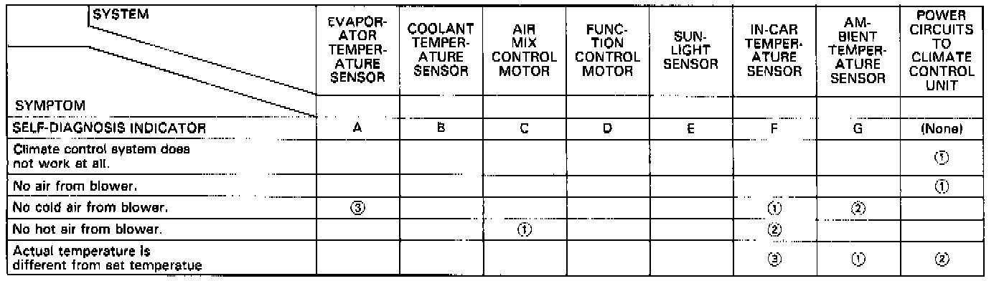

Diagnosis By Symptom - Automatic Climate Control - Coupe
SYMPTOM-TO-SYSTEM CHARTNOTE: Across each row in the chart, the systems that could be sources of a symptom are ranked in the order they should be inspected, starting with (1). Find the symptom in the left column, read across to the most likely source, then refer to the component or flowchart listed at the top of that column. If inspection shows the system is OK, try the next system (2) etc.

NOTE: If you have one of the above symptoms, but no self-diagnosis indicator light, one of the basic heater/air conditioner components controlled by the system could be the cause, i.e., blower motor, A/C compressor clutch, recirculation control motor, etc. Refer to Manual Heating and Air Conditioning for troubleshooting and testing.